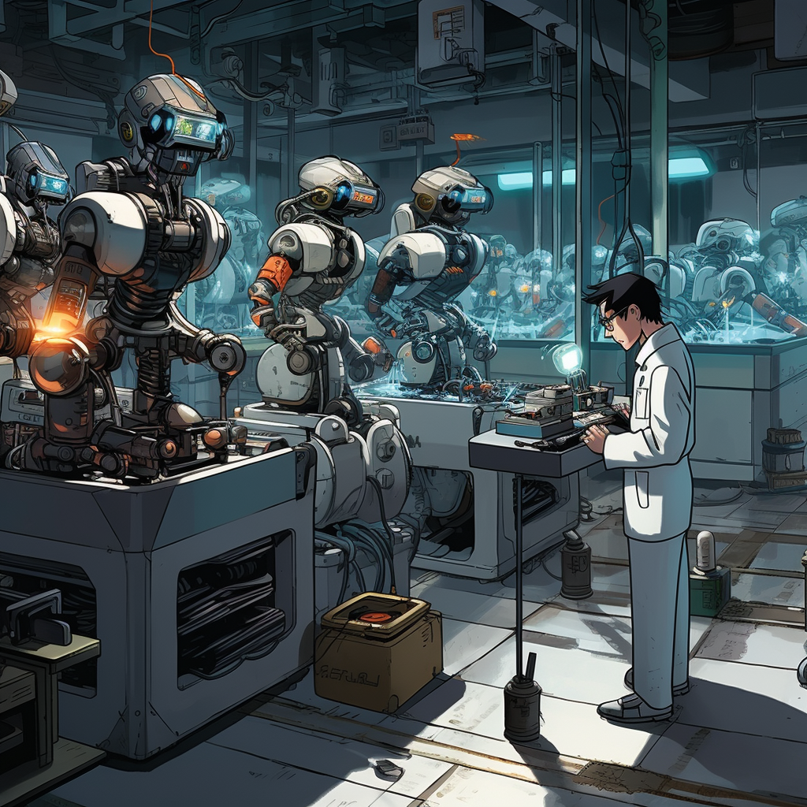

You choose to sever the intelligent connection with the robots, concerned that the emotions of the robots might spiral out of control.
Under this decision, robots in society gradually lose their intelligence. They become simple tools, performing basic tasks.
However, this triggers a conflict between humans and machines. Some see it as unfair treatment towards robots, while others support your decision.
You can choose: